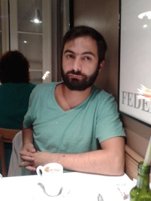

Background: |
Ph.D. at Polytechnic School of the Univerty of Sao Paulo Advisor: Prof. Dr. Emilio Del Moral Hernandez from mar/2007 to mar/2012 |
|
Ph.D. Internship at Max Planck Institute für Dynamik und Selbstorganisation Advisor: Prof. Dr. Marc Timme from aug/2009 to sep/2010 |
|
|
M.Sc. at Polytechnic School of the Univerty of Sao Paulo Advisor: Prof. Dr. Marco Túlio Carvalho de Andrade from feb/2003 to jun/2006 |
|
|
B.Sc. at Faculdade de Engenharia Industrial from feb/1999 to dec/2002 |
|
Supported by: |
CNPq under grant number 140632/2007-7 from mar/2007 to dec/2009 from sep/2010 to feb/2011 |
|
Pró-Reitoria da Pós-Graduação da USP aug/2009 and dec/2009 (flight between GRU - FRA) |
|
|
Max Planck Institute - Networks Dynamics Group from aug/2009 to nov/2009 (accommodation in Goettingen) |
|
|
José Humberto Sandmann - my father from aug/2009 to dec/2009 (German language classes/exams) |
|
|
CAPES under grant number BEX 4076-09-5 from jan/2010 to ago/2010 (Ph.D. internship at MPI) |
IEEE - Institute of Electrical and Electronics Engineers
Member #80216475
INNS - International Neural Network Society
Student member #3951
Toledo Prudente Centro Universitário
MBA courses
|
Business intelligence |
Big data Big data |
ESPM - Escola Superior de Propaganda e Marketing
Undergraduate courses
|
Ambiente de Produção I Enterprise Environment I |
2015, 2014 (spring) |
FIAP - Faculdade de Informática e Administração Paulista
MBA courses
|
Big data |
Modelagem No-SQL No-SQL Modelling |
2014 |
Undergraduate courses
|
Sistemas distribuídos Distributed systems |
2015 |
|
Estrutura de dados e Projetos de Algoritmos II Data Structure and Algorithm Projects II |
2013 |
|
Algoritmos Algorithms |
2013, 2012 (2nd semester) |
|
Banco de dados I Database I |
2013, 2012 |
|
Banco de dados II Database II |
2013, 2012 |
|
Técnicas de programação III Programming techniques III |
2012 |
Unicsul - Universidade Cruzeiro do Sul
Undergraduate courses
|
Programação para dispositivos móveis Programming for mobile |
2012 (spring) |
|
Organização e arquitetura de computadores Computer architecture and organization |
2012 (fall) |
|
Engenharia de software Software engineering |
2012 (fall) |
|
Introdução à linguagem de programação I Introduction for programming I |
2012 (fall) |
|
Banco de dados II Database II |
2013 (fall), 2012 (fall) |
Uninove - Universidade Nove de Junho
Undergraduate courses
|
Arquitetura de computadores Computer architecture |
2011 (fall) |
|
Algoritmos aplicados à engenharia Algorithms applied to engineering |
|
|
Tecnologia web Web techniques |
Polytechnic School of the University of Sao Paulo
Undergraduate courses
|
PSI 2672 |
Práticas em Reconhecimento de Padrões, Modelagem e Neurocomputação Experimental Pattern Recognition, Modeling and Neurocomputing |
2011* |
|
PSI 2533 |
Modelagem em Processamento de Sinais: Redes Neurais e Aprendizado Modeling for Signal Processing: Neural Networks and Learning |
|
|
PCS 2302 |
Laboratório de Fundamentos de Engenharia de Computação Laboratory of the Foundations of Computing Engineering |
2008† |
* with grants from CAPES (PAE)
† with grants from FAPESP
Researchers
http://www.boekhoff.info/
http://www.uni-goettingen.de/de/131580.html
http://eam.webhop.net/
http://nwerneck.sdf.org/
http://math.rice.edu/~cb26/
Attracting Fixed Conferences
http://dynamicsdays.info/
IJCNN - International Joint Conference on Neural Networks
http://www.ijcnn.org/
NIPS - Neural Information Processing Systems
http://nips.cc/
Few tools
an application for simulation of chaotic behavior.
an application exemplifies the use of a multi layer perceptron neural networks to recognize a language.
the ground of a framework to make numerical simulations. It was started around 2008, but is under construction still (you would be a volunteer!).
See my calendar: http://www.lsi.usp.br/~sandmann/calendar.html